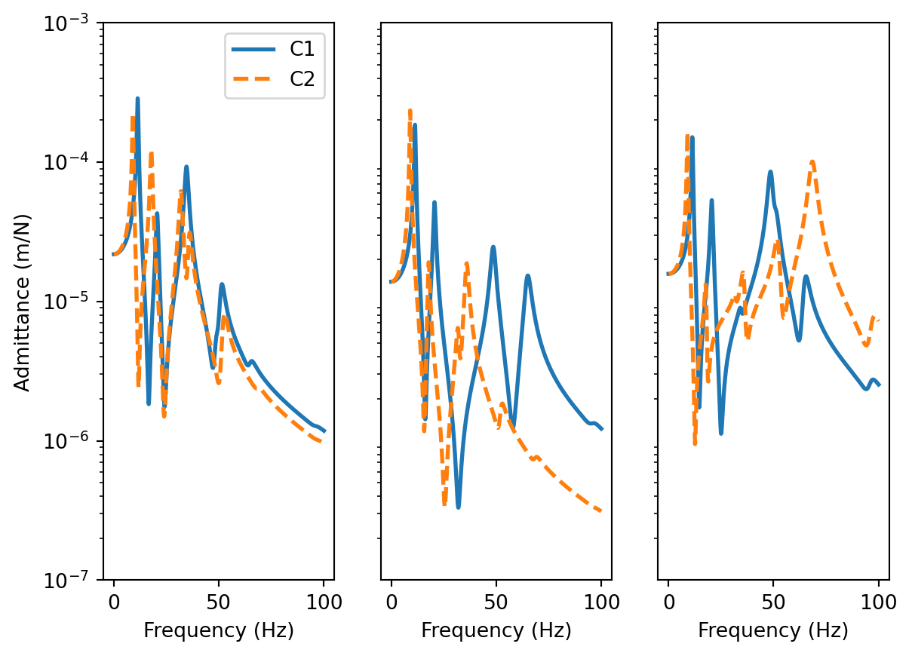

Code
import numpy as np
np.set_printoptions(linewidth=100)
import matplotlib.pyplot as plt
import scipy as sp
import sys as sys
# Define component masses and build matrices
m1, m2, m3, m4, m5 = 1, 2, 2, 1, 0.5
m6, m7, m8, m9, m10, m11 = 0.5, 2, 1, 3, 5,0.5
M_A = np.diag(np.array([m1,m2,m3,m4,m5])) # Comp A
M_B1 = np.diag(np.array([m6,m7,m8,m9,m10,m11])) # Comp B
M_B2 = np.diag(np.array([m6*2,m7*4,m8/3,m9,m10*2,m11/2])) # Comp B
# Define component stiffnesses and build matrices (complex stiffness -> structural damping)
η = 0.05 # Structural loss factor
k1, k2, k3, k4, k5 = 1e5*(1+1j*η), 1.5e5*(1+1j*η), 0.7e5*(1+1j*η), 1e5*(1+1j*η), 0.5e5*(1+1j*η)
k6, k7, k8, k9, k10, k11 = 0.5e5*(1+1j*η), 2e5*(1+1j*η), 1e5*(1+1j*η), 0.2e5*(1+1j*η), 1e5*(1+1j*η),0.5e5*(1+1j*η)
K_A = np.array([[k1+k2+k5, -k2, 0, 0, -k5],
[-k2, k2+k3+k4, -k3, -k4, 0],
[0, -k3, k3, 0, 0],
[0, -k4, 0, k4, 0],
[-k5, 0, 0, 0, k5]])
K_B = np.array([[k6, 0, 0, -k6, 0, 0],
[0, k7, 0, 0, -k7, 0],
[0, 0, k8, 0, -k8, 0],
[-k6, 0, 0, k6+k9, 0, -k9],
[0, -k7, -k8, 0, k7+k8+k10, -k10],
[0, 0, 0, -k9, -k10, k9+k10+k11]])
f = np.linspace(0,100,1000) # Generate frequency array
ω = 2*np.pi*f # Convert to radians
# Compute FRF matrices over frequency range (have used einsum( ) to show an alternative loop-free approach)
Y_A = np.linalg.inv(K_A - np.einsum('i,jk->ijk',ω**2, M_A))
Y_B1 = np.linalg.inv(K_B - np.einsum('i,jk->ijk',ω**2, M_B1))
Y_B2 = np.linalg.inv(K_B - np.einsum('i,jk->ijk',ω**2, M_B2))
Y1 = np.zeros((f.shape[0],11,11), dtype='complex') # Allocate space for uncoupled assembly 1
Y2 = np.zeros((f.shape[0],11,11), dtype='complex') # Allocate space for uncoupled assembly 2
for fi in range(f.shape[0]): # Build block diagonal (uncoupled) FRF matrix
Y1[fi,:,:] = sp.linalg.block_diag(Y_A[fi,:,:],Y_B1[fi,:,:])
Y2[fi,:,:] = sp.linalg.block_diag(Y_A[fi,:,:],Y_B2[fi,:,:])
# Boolean equilibrium matrix:
L = np.array([[1,0,0,0,0,0,0,0,0,0,0],
[0,1,0,0,0,0,0,0,0,0,0],
[0,0,1,0,0,1,0,0,0,0,0],
[0,0,0,1,0,0,1,0,0,0,0],
[0,0,0,0,1,0,0,1,0,0,0],
[0,0,0,0,0,0,0,0,1,0,0],
[0,0,0,0,0,0,0,0,0,1,0],
[0,0,0,0,0,0,0,0,0,0,1]]).T
# Allocate space for coupled FRF matrices
Y_C1 = np.zeros((f.shape[0],8,8), dtype='complex') # Allocate space for coupled assembly 1
Y_C2 = np.zeros((f.shape[0],8,8), dtype='complex') # Allocate space for coupled assembly 2
for fi in range(f.shape[0]): # Loop over frequency and compute coupled FRF using primal and dual formulations
Y_C1[fi,:,:] = np.linalg.inv(L.T@np.linalg.inv(Y1[fi,:,:])@L)
Y_C2[fi,:,:] = np.linalg.inv(L.T@np.linalg.inv(Y2[fi,:,:])@L)
fig, ax = plt.subplots(1,3)
ax[0].semilogy(f, np.abs(Y_C1[:,2,2]),label='C1',linewidth=2)
ax[1].semilogy(f, np.abs(Y_C1[:,3,3]),linewidth=2)
ax[2].semilogy(f, np.abs(Y_C1[:,4,4]),linewidth=2)
ax[0].semilogy(f, np.abs(Y_C2[:,2,2]),label='C2',linewidth=2,linestyle='dashed')
ax[1].semilogy(f, np.abs(Y_C2[:,3,3]),linewidth=2,linestyle='dashed')
ax[2].semilogy(f, np.abs(Y_C2[:,4,4]),linewidth=2,linestyle='dashed')
ax[0].set_ylim([1e-7,1e-3])
ax[1].set_ylim([1e-7,1e-3])
ax[2].set_ylim([1e-7,1e-3])
ax[1].set_yticks([])
ax[2].set_yticks([])
ax[0].set_xlabel('Frequency (Hz)')
ax[1].set_xlabel('Frequency (Hz)')
ax[2].set_xlabel('Frequency (Hz)')
ax[0].set_ylabel('Admittance (m/N)')
ax[0].legend()
plt.show() 